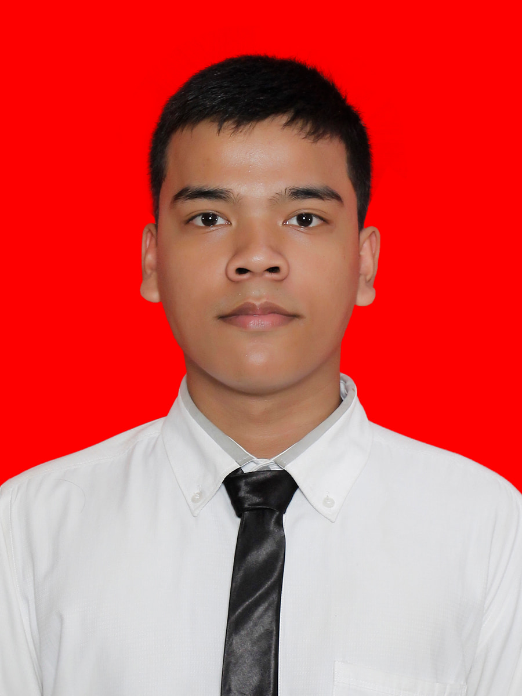

01
Logika
Belajar menyusun cara berpikir sebelum buru-buru mencari jawaban.
Hai, saya Bryan Adam Lumban Gaol — mahasiswa Ilmu Komputer di Universitas Negeri Medan. Saya belum punya semua jawabannya. Saya sedang belajar, mencoba hal baru, kadang panik, lalu belajar untuk tetap berjalan.

Saya sedang berada di bagian awal perjalanan. Dan saya ingin menikmati prosesnya tanpa berpura-pura sudah menguasai semuanya.
Saya termasuk orang yang lebih mudah terbuka ketika sudah merasa nyaman. Bagi orang yang benar-benar mengenal saya, saya cenderung ekstrovert. Tetapi di kampus saya juga sering memilih mengerjakan sesuatu sendiri—mengerjakan tugas, makan, atau sekadar menikmati waktu saya.
Saya suka merencanakan sesuatu dan cukup peduli dengan orang-orang di sekitar saya. Saya juga masih belajar menghadapi satu hal dalam diri saya: mudah panik. Bagi saya, bertumbuh bukan berarti menjadi sempurna, tetapi belajar menjalani proses dengan lebih tenang.
Saya memilih Ilmu Komputer sebagai ruang untuk mencoba sesuatu yang baru dan mengenal teknologi lebih dalam.
Semester pertama terasa capek, tetapi juga menyenangkan ketika benar-benar dijalani. Saya sedang mengenal ritme kuliah dan belajar dari hal-hal yang sebelumnya belum saya pahami.
Saya ingin lebih mengenal coding, web development, dan berbagai sisi teknologi. Belum tahu akan berakhir di mana, tetapi saya ingin mencoba terlebih dahulu.
Target saya sederhana: menyelesaikan kuliah, mendapatkan pekerjaan, dan punya kemampuan yang benar-benar bisa saya gunakan.
“Percayalah pada proses, bertahan dalam doa, dan buktikan dengan usaha.”Prinsip yang ingin saya bawa selama menjalani perjalanan ini—terutama ketika semuanya terasa lebih cepat daripada yang saya rencanakan.
Bidang-bidang yang sedang saya kenali satu per satu sebagai mahasiswa Ilmu Komputer.
Belajar menyusun cara berpikir sebelum buru-buru mencari jawaban.
Masih dari dasar, tetapi saya ingin terus memahami bagaimana sesuatu bisa dibuat.
Mulai mengenal bagaimana teknologi diterjemahkan menjadi sesuatu yang bisa dilihat dan digunakan.
Belajar menghadapi masalah satu langkah demi satu langkah, termasuk ketika sempat panik.
Karena hidup sebagai mahasiswa bukan cuma soal tugas dan program yang error.
Saya suka mendengarkan musik—terutama ballad. Ketika tidak ada tugas, me time adalah salah satu cara saya menikmati waktu sendiri.
Saya suka olahraga lari, termasuk lari estafet. Ada sesuatu yang menyenangkan dari bergerak dan menjaga ritme.
Untuk urusan film, saya justru lebih suka tema horor. Kontras yang cukup jauh dari ballad yang tenang.
Saya sedang belajar untuk tidak membiarkan rasa panik menentukan bagaimana saya menjalani proses.
Masih mahasiswa semester 1, masih banyak yang ingin dipelajari. Untuk sekarang, saya senang bertemu dengan orang baru dan bertukar cerita.